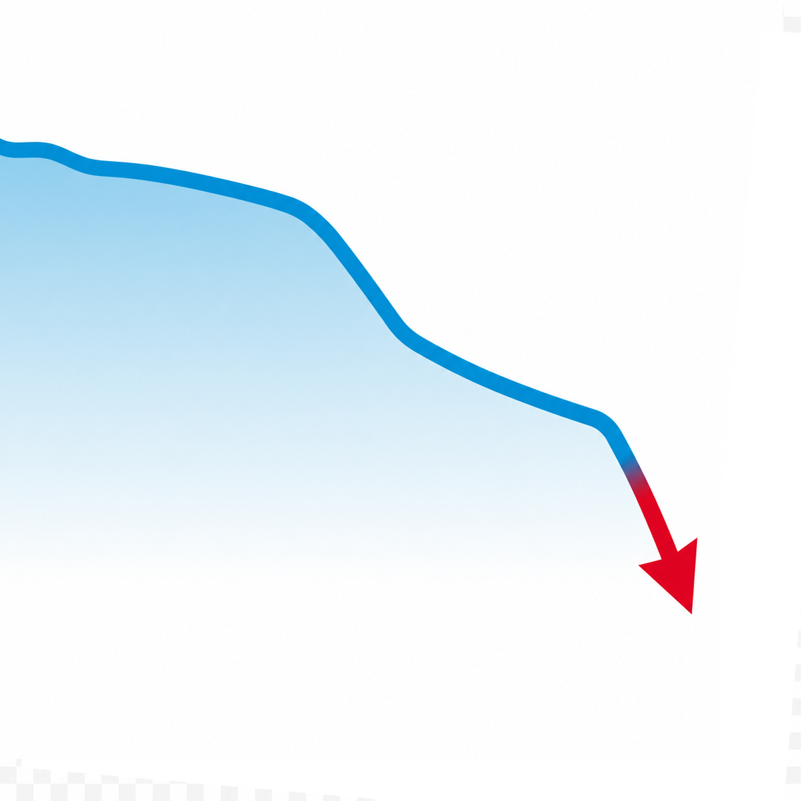

Trend nach unten:
92’360
14. Juli 2026
Subscribers

Quelle und Hintergrund
Die Zahlen bei bittel.tv sinken. Sein Telegram-Kanal hatte einmal über 100’000 Abonnenten. Inzwischen geht die Zahl kontinuierlich zurück. Wo früher fast täglich coronaverschwörerischer Content produziert wurde, die Fanbubble mit persönlichen Themen und Verschwörungserzählungen bedient wurde und sich der Kanal zum Sprachrohr Reiner Fuellmichs hochgearbeitet hatte, ist nicht mehr viel übrig geblieben.
Das Versprechen «Wir werden immer mehr» wird auf dieser Seite mit aktuellen Zahlen begleitet und in Frage gestellt. Ein paar TG-Werte aus älteren Tagen waren aus Streams herauszulesen. Der Abwärtstrend dauert also schein ein Weilchen an.
Bei Youtube steigen die Abozahlen zu meinem Erstaunen. Interessant, wenn man von Roger Bittel immer wieder hört, dass er die Plattform nicht mag und unterstützen möchte, sie aber nach wie vor enorm wichtig für die Reichweite seiner Streams ist. Bin gespannt, wie sich die Werte in nächster Zeit entwickeln.
| Datum | Telegram-Abos Quelle: TGStat |
Youtube-Abos Quelle: Youtube |
|---|---|---|
| 14.07.2026 | 92’360 | 43’500 |